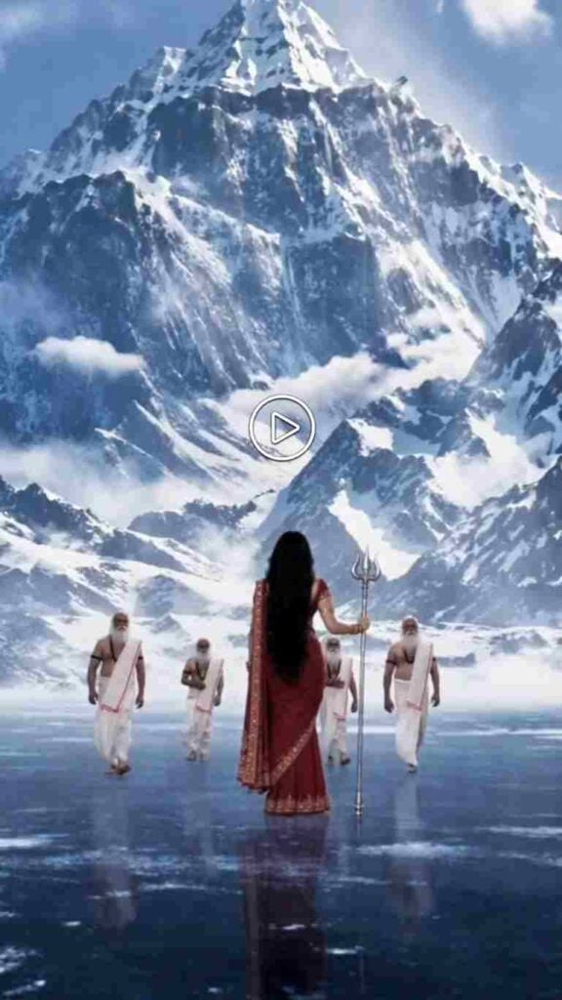

This free Maa Parvati AI video editing prompt turns one normal selfie into a divine cinematic reel — traditional red saree, gold jewellery, flowing hair, Himalayan scenery and soft cinematic lighting, while your own face stays exactly the same. You get a ChatGPT photo prompt plus three ready Google Flow video prompts that together make a full 30-second clip. Everything below is copy-paste ready, so you can finish the whole edit in about ten minutes without any editing skills.
Below you will find the photo prompt first, then the three video prompts, followed by step-by-step instructions and answers to the most common questions about this Maa Parvati AI video prompt.
Why Is This Maa Parvati-Inspired AI Video Going Viral?
This Maa Parvati-inspired AI video is getting attention because it combines realistic AI visuals of Maa Parvati and Bholenath with the emotional devotional song “Jab Zid Pe Aa Gayi Parvati” by Sadhu S. Tiwari. The cinematic visuals, traditional outfits, detailed jewelry, Himalayan setting, and realistic AI effects make the video visually appealing, while the song adds an emotional connection to the story and makes the overall video more engaging for viewers.
Maa Parvati AI Photo Prompt (Use This First)
Upload a clear photo of yourself as the reference image and use the following prompt in your preferred AI image generation tool. The prompt focuses on maintaining your original appearance while adding traditional styling, a scenic Himalayan background, and a polished cinematic look.
Want more awesome prompts?
Join our community and get the latest viral prompts daily.
Follow on InstagramHow to Create Maa Parvati AI Image
If you want to turn your normal photo into a Maa Parvati-inspired AI photo, then follow the steps given below.
- Open the ChatGPT app or website and start a new chat.
- Upload a clear photo of yourself where your face is clearly visible.
- Copy the Maa Parvati AI Image Prompt given above.
- Paste the copied prompt into the same ChatGPT chat.
- Send the prompt and wait for ChatGPT to generate your AI image.
- Check the generated image to see if the face, saree, jewelry, and background look right.
- If you want any changes, ask ChatGPT to modify the image according to your preference.
- Generate the image again if you want a more refined result.
- Once you are satisfied, save the final image and use it for your social-media content.
Maa Parvati AI Video Editing Prompt for Google Flow
This is the main Maa Parvati AI video editing prompt, split into 3 separate Google Flow prompts — one for each 10-second clip. Run them in order and join the three clips to get a complete 30-second cinematic video. Each prompt is written to hold your facial identity steady across all three clips, which is the part most AI videos get wrong.

Video 1 — 0–10 Seconds
The opening clip: the trishul in the ice, the reveal of your face, and the sages walking in. Use your ChatGPT image as the starting frame here — this is the clip that sets your facial identity for the other two, so regenerate it until the face looks right before moving on.
Video 2 — 10–20 Seconds
The temple dance sequence — the most dramatic clip of the three. Use the last frame of Video 1 as the starting frame so the face and saree carry over. If the dance motion comes out blurry, generate it again rather than slowing it down later in editing.
Video 3 — 20–30 Seconds
The Bholenath reveal that closes the video. This clip does not use your face at all, so you can generate it separately at any time. It ends on a fade to black, which makes it the natural final clip when you join all three.
How to Generate an AI Video with Google Flow
Generating an AI video with Google Flow is a simple process when you already have your AI image and video prompt ready. Open Google Flow in your browser, sign in with your Google account, and create a new project. Select Frames to Video, choose Omni Flash as the model, and set the aspect ratio to 16:9. Upload your AI-generated image as the starting frame, then paste the video prompt describing the character movement, camera motion, environment, and cinematic details. Start the generation process and wait for Flow to create the video. Once the video is ready, review the result and generate another version if needed. Finally, save the video and use your preferred video editing app to add music, transitions, color grading, or other finishing effects.
How to Make the Video Look More Professional
A simple camera movement can make your AI-generated image feel more like a real cinematic video. Use a slow camera push-in, gentle side movement, or a smooth reveal instead of fast movements, as this can also help maintain a consistent character appearance throughout the clip. You can also create several short clips and combine them into one video, starting with the Himalayan background, introducing the Maa Parvati-inspired character, showing a closer portrait, highlighting the saree and jewelry, and ending with a wider cinematic shot.
Common Mistakes to Avoid
- Using a blurry or side-angle selfie. The whole edit depends on the reference photo. A clear, front-facing, well-lit face is the single biggest factor in whether the result looks like you.
- Changing the “keep my face unchanged” line. That instruction is what stops the AI from generating a stranger. Edit the saree, jewellery or background wording instead.
- Running all three clips from the same starting image. Video 2 should start from the last frame of Video 1, otherwise the face and outfit visibly jump between clips.
- Asking for too much movement. Fast motion breaks facial consistency. Slow push-ins and gentle reveals look far more cinematic and stay stable.
- Adding the song inside the prompt. The prompts say “no BGM” on purpose — add music afterwards in your editing app so the audio stays clean.
Frequently Asked Questions
Is this Maa Parvati AI video editing prompt free to use?
Yes, every prompt on this page is completely free to copy and use. You only need free accounts on ChatGPT and Google Flow. Free plans do limit how many images and videos you can generate per day, so if you run out you can either wait for the daily reset or use a paid plan for faster, higher-quality generations.
Which AI tools work with this prompt?
The photo prompt works with ChatGPT, Google Gemini and most image tools that accept a reference photo. For the video part, Google Flow with the Omni Flash model is recommended because it holds facial identity well. Gemini with Veo also works if you do not have Flow access.
Will the AI change my face?
No, if you keep the prompt as written. The line asking the AI to keep your face, identity, facial features and skin tone unchanged is what preserves your real appearance. Only the outfit, jewellery, hair and background are replaced. If the face still changes, your reference photo is likely too dark, blurry or taken at an angle.
Can boys use this Maa Parvati AI video prompt?
This particular prompt is written for a female look. Boys can use the third video prompt, which creates the Bholenath sequence, or change the saree and jewellery wording to a dhoti, rudraksha beads and matted hair for a Shiva-inspired portrait in the same Himalayan setting.
What song is used in the viral Maa Parvati video?
The trending version uses “Jab Zid Pe Aa Gayi Parvati” by Sadhu S. Tiwari. Add it in your video editing app after the clips are joined — do not mention the song inside the AI prompt, as the prompts are written to generate silent video.
How long does the full video take to make?
Around 10 to 20 minutes in total. The ChatGPT image takes a minute or two, each Flow clip takes a few minutes to render, and joining the three clips with music takes another five minutes. Most of the time goes into regenerating until the face looks right.
Why does my video look different from the example?
AI tools produce a slightly different result every run, even with the same prompt. Model version, reference photo quality and aspect ratio all affect the output. Generate two or three times and pick the best one rather than expecting an exact match on the first try.
Can I post this video on Instagram and YouTube?
Yes. The prompts generate 9:16 vertical video at 1080×1920, which is the correct format for Instagram Reels, YouTube Shorts and Facebook Reels. Just make sure any music you add is licensed for the platform you post on.
More Devotional AI Prompts
If you liked this Maa Parvati AI video editing prompt, try these related prompts next:
- Radha Krishna Divine Love Story | Viral AI Video Editing Prompt — another devotional multi-clip video prompt in the same cinematic style.
- Ultra Realistic Shivji Temple Photo Prompt — pairs well with Video 3 if you want a matching Bholenath portrait.
- Radha Rani AI Photo Editing Prompts 2026 — traditional saree and jewellery looks for photo edits.
- Viral Cinematic Mountain View AI Video Editing Prompt for Gemini — if you want the Himalayan look without the devotional theme.
Conclusion
The Maa Parvati-inspired AI video editing prompt provides an easy way to create a traditional and cinematic image from your own photo. You can use ChatGPT to generate the AI image, featuring a deep-red saree, detailed gold jewelry, flowing black hair, Himalayan scenery, soft mist, and cinematic lighting, and then use that image as a reference for video generation.
For video creation, this Maa Parvati AI video prompt works with Google Flow or the latest version of Gemini with Veo to turn the AI image into a short cinematic video with natural movement and smooth camera motion. For the best results, use a clear reference photo, keep the facial and character details consistent, and avoid excessive movement. With these prompts and tools, you can create a beautiful Maa Parvati-inspired AI transformation suitable for sharing on your website and social media platforms.